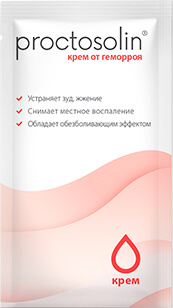
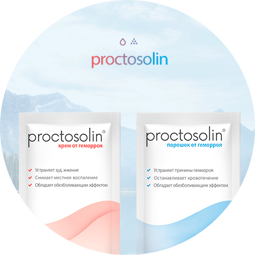
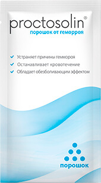

Крем – борется с локальными
проявлениями геморроя

- Облегчает боль и зуд уже после
первого нанесения - Снимает воспаление
геморроидальных узлов - Устраняет кровотечения,
заживляет трещины и язвы - Обеззараживает, препятствует
развитию инфекционных процессов - Снижает вязкость крови, повышает
общий тонус стенок сосудов

Концентрат – справляется
с причинами геморроя

- Возвращает геморроидальные узлы
к нормальным размерам - Восстанавливает тонус стенок
сосудов и артерий - Способствует заживлению трещин
и слизистой прямой кишки - Нормализует кровообращение,
устраняет венозную недостаточность - Борется с воспалительными процессами
в прямой кишке, устраняет запоры и диареи